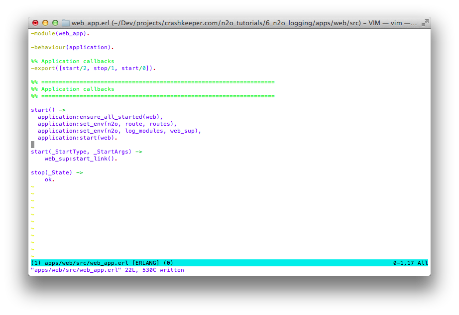
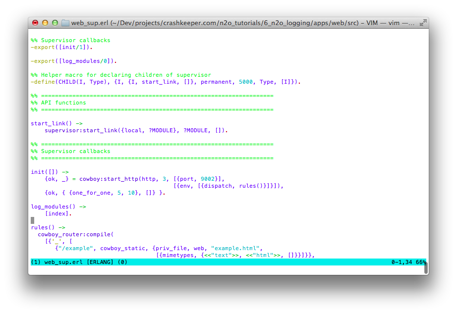
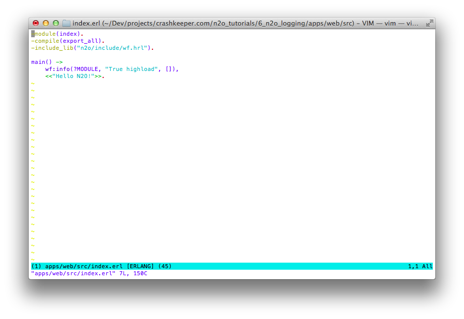
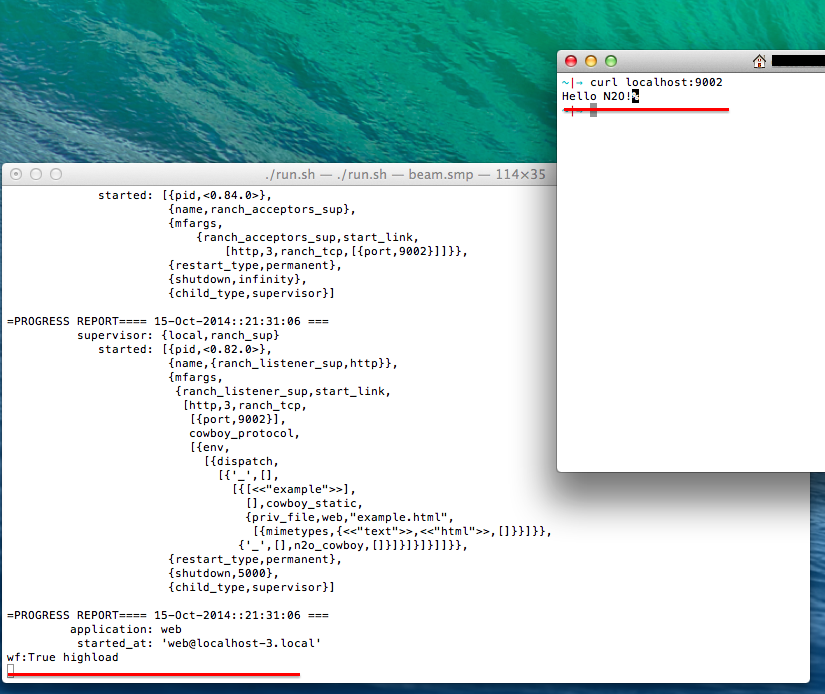

Tue 05 May 2020, tags: ErlangN2OTutorialloggingerlang logging
Re-posting from 2014-10-08
Logging and Error tracking are very important things for every project. Let's learn how to write logs in N2O.
Note: For this example, we will use the code we created in previous articles about templates.
Implementation
N2O provides a basic interface for writing logs:
- wf:warning/1,2,3
- wf:info/1,2,3
- wf:error/1,2,3
You can find details in Source code.
N2O logging backend can be configured. By default N2O is providing 2 implementations:
- n2o_io - output to a terminal
- n2o_log - logging using error_logger
We can also create a custom backend, which should be implementing 3 methods:
- info(Module, String, Args)
- warning(Module, String, Args)
- error(Module, String, Args)
Where:
- Module :: atom - a module name from what the message is coming
- String :: term - a term with message
- Args :: list - an arguments list for using with String
Logging is also required some basic configuration needs to be done before using. We should define what modules can write logs. Below we will show how to do it on example.
Logging in action
Let's see how logging works in the wild.
From the previous (N2O templates. Erlydtl) tutorial we have files in source directory
apps/web/src ⇒ tree ├── erlydtl_page.erl ├── index.erl ├── n2o_page.erl ├── routes.erl ├── web.app.src ├── web_app.erl └── web_sup.erl
As a first step, we will configure N2O. We should set an environment variable with a module name which will have log_modules/0 function with a list of modules.
vim web_app.erl
start() -> application:ensure_all_started(web), application:set_env(n2o, route, routes), application:set_env(n2o, log_modules, web_sup), % module with log_modules/0 function application:start(web).

Now let's write a log_module function implementation in web_sup.erl file.
Note: You can use any module for that reason. Our recommendation is to create a config.erl file where keep functions like this.
vim web_sup.erl
-export([log_modules/0]). % add log_modules function to an export list
log_modules() ->
[index]. % allow logs only from the "index" module

Configuration is ready. Now we will add logs to the index.erl file and every time when we call "/" url, N2O will write in console "True highload".
vim index.erl
main() ->
wf:info(?MODULE, "True highload", []),
<<"Hello N2O!">>.

Here we go! Run the code
./run.sh

Comments !